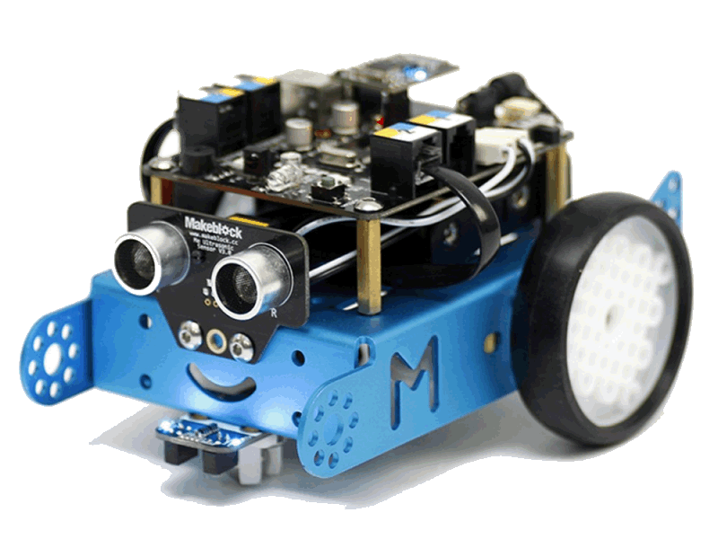

Le mBot est un robot pédagogique et programmable conçu par la société Makeblock, très utilisé dans les collèges pour l'initiation à la robotique et à la programmation. Le robot se programme principalement via le logiciel mBlock. C'est un environnement visuel basé sur Scratch, où il suffit d'imbriquer des blocs colorés, ce qui rend l'apprentissage très intuitif. Pour les utilisateurs plus avancés, il est également possible de le programmer en Python ou en langage C (Arduino).
| Couleur | Bleu |
| Image |  |
| Prix | 150€ |